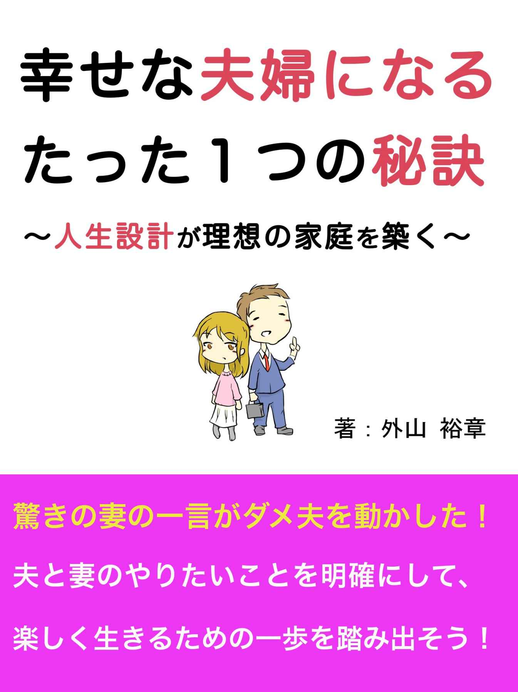
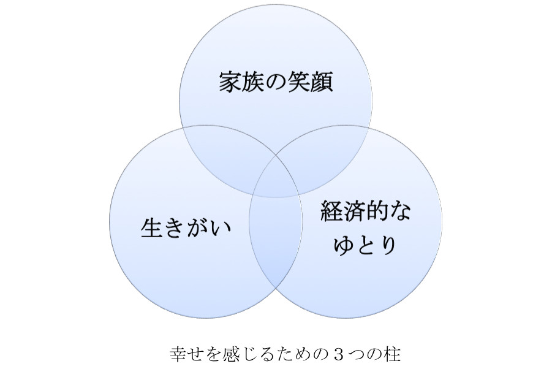
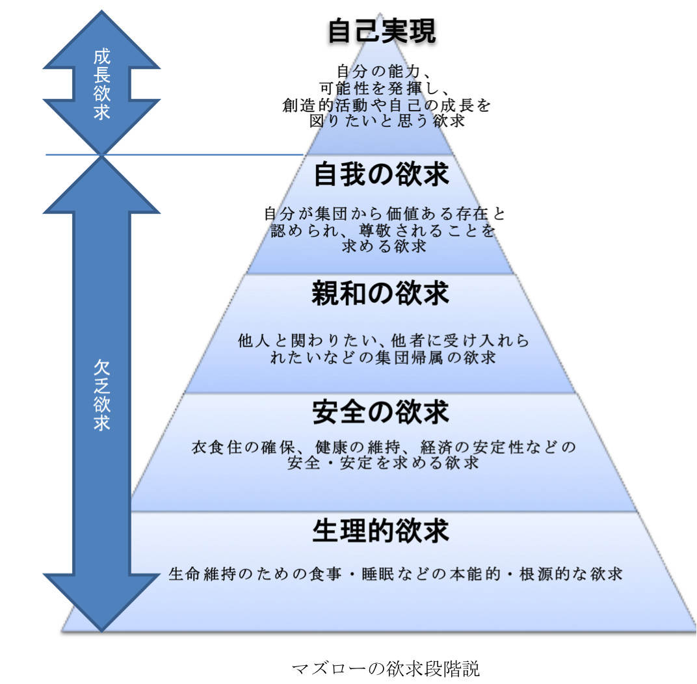
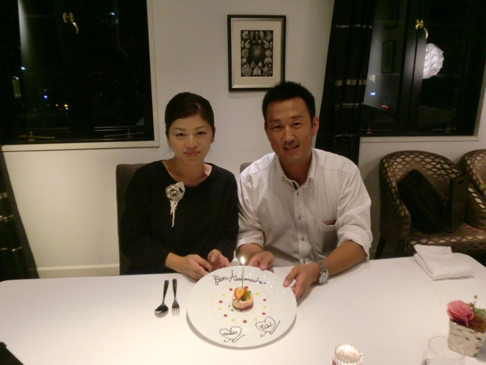

| 幸せな夫婦になるたった１つの秘訣〜人生設計が理想の家庭を築く〜 | |
| 外山裕章 | |
| (2014) | |

本書をご購入していただきありがとうございます。筆者の外山といいます。
サラリーマンの夫を持ち、専業主婦、もしくは子供を預けてパートに出ている奥様。日々こんなことを感じていませんか？
・夫が多忙で毎日帰りが遅い
・夫が帰ってくるときには子育てやパートに疲れて寝てしまい、夫との会話が少ない
・夫の給料だけでは将来が不安
・何か仕事を始めようとしても長続きしない、うまくいかない
実はこれは私の妻が結婚して１０年間、もやもやと思っていたことです。
夫がサラリーマンの家庭では同じような不安、悩みを持っているのではないでしょうか？もしくは、どの家庭もそうだから、と我慢して生活することが当たり前になってしまっていませんか？
このような漠然とした不安や悩みをお持ちの奥様やご夫婦に読んでいただきたいと思っています。
私は、現在３７歳で少し前まで平凡なサラリーマン。会社ではそれなりの役割を任され、全力投球で頑張ってきました。しかし、週のほとんどを仕事や仕事の付き合いと称した飲み会で帰宅は深夜、家庭では家事や子育てなど、家のことはすべて妻にまかせっきりにしてきたダメ夫なのです。
しかし、そんな私が１３年勤めた会社をやめ、起業することを決意しました。妻と子供３人を抱えての起業ですので、大きな不安はあります。しかし、その不安を勇気に変えてくれたのは妻の驚くべき一言でした。
この一言をきっかけに夫婦で人生を見つめ直すことができ、ドキドキわくわくする毎日を過ごすことができるようになりました。そのきっかけとなった言葉やエピソード、働き方に対する考え方の変化を本書でご紹介したいと思います。
なお、本書では、サラリーマンの気持ち（私の気持ち）を随所に記載しています。
あなたの夫と重ねて読んでいただくことで、夫の気持ちをよりご理解していただくことを期待し、できるだけ赤裸々に書くように努めました。
また、本書は独立起業のノウハウ本ではありませんのでご注意ください。
私たち夫婦の体験をお伝えすることで、毎日ドキドキわくわくする毎日を過ごす夫婦が少しでも増えることを願っています。
あなたは、幸せな家庭像をイメージできますか？
すぐにイメージできる方は素晴らしいです。夫婦でしっかり幸せな家庭像を共有されている証拠だと思います。
ですが、明確にイメージできる方はあまり多くないのではないでしょうか？
そこで急ではありますが、幸せな家庭像をイメージするためのステップとして、１つやって頂きたい事があります。
夫婦が描く幸せな家庭像は夫婦の数だけありますが、家族みんなが笑顔でいることが幸せと感じる時であることはどの家庭でも共通することだと思います。
紙とペンをご用意していただき、「あなたが幸せを感じる時」、「あなたが笑顔になる瞬間」を思いつくままに書き出してみてください。
何でもかまいません。パートナーの事、子供の事、将来の事なんでもOKです。
何か書けましたでしょうか？ １つでもいいので、書いてみてくださいね。
ちなみに、私が幸せと感じる時はこちらです。
・子供とサッカーをしている時
・家族で旅行に行きホテルの部屋で子供達がはしゃいでいる姿を見ている時
・休日に夕方の早い時間から妻と大好きなビールを飲んでいる時
・友人と大人数で集まり、みんなでワイワイ飲んでいる時
・親孝行をして感謝された時
私の場合は、家族や友人と楽しく過ごしている時である事が多く、日常の生活の中に幸せがある事がわかりました。幸せに感じる事は、実は身近な事が多かったりします。
あなたが書き出した内容はいかがでしたか？
そもそも、「幸せ」を辞書で調べると、「満たされていること」「不平や不満がなく、たのしいこと」といった意味が出てきます。つまり、心が満たされている、楽しいと感じることが幸せにつながっています。
そして、家庭を持つと、幸せと感じるシーンが増えていきます。それは、大切な人が増えていくからですよね。幸せは人との関わりのなかで生まれ、実は身近なところにあるのです。
幸せは身近なところにあることに対し、多くサラリーマンは１日の３分の１以上の時間を仕事に費やしています。
そして家族をもつと、より一生懸命働いて、生活していくためのお金を稼がなければいけません。サラリーマン家庭では、家族が増え幸せが増すとともに、仕事の時間も増えてしまう傾向にあります。
私自身、深夜まで残業して、子供の寝顔しか見ることができないこともよくありました。それでも「家族のため！」と、守るものがあるからこそ夫は忙しくても頑張って働くことができるのです。
それがよくある家庭をもつサラリーマンなのではないでしょうか？
そして、そのようなサラリーマンなら必ずといっていい程思うことがあります。
・お金に困らない生活ができるくらいの収入が欲しい。
・好きな事を仕事にしたい。
・人の役に立つ仕事をしたい。
・人間関係が良好な職場で仕事をしたい。
仕事をされている方なら当てはまるのではないでしょうか？
このようにサラリーマンの心を満たすものは、「家族の笑顔」の他に、「経済的なゆとり」、「生きがい（仕事のやりがい）」といった要素も大きいのです。
ですので、これらの３つの要素を「幸せを感じるための３つの柱」とここでは呼ぶ事にします。

この３つの柱は足りないと不満という意味ではなく、満たされれば満たされるほど、幸せを感じるという指標と考えてください。この指標をあなたの家庭に当てはめてみると、より幸せになるための課題が見えてくると思います。
＜
現状の問題点の例＞
・目の前の仕事をこなす事しか考えられていない。
（生きがい、仕事にやりがいが感じられない）
・ひたすら働くが経済的な問題が解決していかない
・残業が多く、家族と過ごす時間が少ない（夫婦や家族の会話が少ない）
・常に仕事が気になり、体調がすぐれない
実はこのような状態の家庭が多いのではないかと私は思っています。
では、その状態を脱するためにはどうしたらいいのでしょうか？
それは夫婦で人生設計をする事です。
設計と言われると固く感じるかもしれませんが、夫婦で幸せな家庭像を作っていくだけなのです。
「家族の笑顔」、「経済的なゆとり」、「生きがい」の３つの柱を高める事が幸せに繋がると先程お話しました。サラリーマン家庭では、日々の仕事や家事に追われ、５年先、１０年先、３０年先の家族の将来を考える時間をなかなか取れないのが現実だと思います。
具体的には下記のような状況の中で漠然とした不安を抱えている方も多いのではないでしょうか？
・夫が多忙で毎日帰りが遅い
・夫が帰ってくるときには子育てやパートに疲れて寝てしまい、夫との会話が少ない
・夫の給料だけでは将来が不安
・何か始めようとしても長続きしない、うまくいかない
また、夢を持っていても、共有できている夫婦は少ないのではないでしょうか？
曖昧にしたままだったり、お互いに察してくれるだろうと思っていたり、照れ臭くて今更話しにくいと思っている人が多いと思います。
また、サラリーマンだから夢を持つことや新しいことを始めることを無理だと諦めてしまっていませんか？
私たち夫婦がそうでした。
しかし、私たち夫婦は上記のような生活を続けていましたが、７年前にある友人の勧めをキッカケに幸せな人生を送るための設計をする事にしました。
この頃は人生の設計の大事さがわかりませんでしたが、７年越しに必要性を実感しました。
７年前の私たち夫婦はお互いに将来の目標を書き出し、共有し、夫婦の人生設計をした結果、私は１３年勤めた会社をやめ、起業することを決意するに至りました。そして、不安はあるものの、新しい人生を夫婦、いや、家族で歩き出し、ドキドキわくわくする毎日を過ごすことができるようになりました。
そして、夫婦は、社会の一番小さな組織として、人生のパートナーとして一番近くで支え合える存在であり、こんなにもありがたい存在は他にはないことを改めて気づいたのです。
大事なのは、しっかり夫婦で共有することです。
サラリーマンは安定していると言いますが、多残業、夫婦の会話がない、夫の給料だけでは足りないという生活のなかでは、漠然と不安を抱いているはずです。
そこで、これまで私たち夫婦が感じてきた漠然とした不安を次章でお話します。
現代社会のサラリーマンは、会社から給与をもらい、その中から年金、税金、保険などを将来の自分のために支払っていますが、３０年後にどの程度その恩恵が受けられるか分からない時代になってきました。
また、遅くまで残業し頑張って働いても、給料は４０歳くらいで頭打ち、出世もある程度のところで停滞することも、私はサラリーマン時代に目の当たりにしてきました。
最近では大手企業でも早期退職を募るニュースがあるなど、どんな企業に勤めていても一生安泰という確約も得られなくなってきています。
一方、子供１人の養育に２０００万かかるといいます。他にも家のローンや車の買い替えなど何かとお金が必要になってきます。
夫の給料だけでやっていけるのだろうか？ その給料も週に何十時間もの残業代をあてにしているため、夫が倒れたらどうしよう、といった不安も少なからず抱えていると思います。
さらに、サラリーマンは当然ながら景気や会社の状況に左右されます。
会社の倒産、リストラなど不安要素が多いです。最近はふとした不祥事で信頼を一気に失う会社もあります。会社の合併で仕事の内容が大きく変わることもあります。
これまで私自身もリーマンショックや東日本大震災の影響による労働環境の変更（残業の規制、休日の変更など）や給料の減額、会社の合併に伴う業務内容の大幅な変更、会社の状況により自分や家族への影響が大きいことを経験してきました。
大切な家族の将来を、会社に委ねているだけで大丈夫といえるのでしょうか？
会社に委ねていると、将来の金銭的な面だけでなく、その他の問題も潜んでいます。
その問題を次にお話します。
サラリーマン家庭での大きな問題でもあるのが残業です。残業が多くなると、家にいる時間が減るため自然と夫婦の会話も減ってしまいます。そうして、すれ違いの生活となり夫婦の仲が悪くなるということもよく聞きます。
実際に私の家庭でも、同じような経験がありました。
私のサラリーマン時代は、毎日のように残業があり、疲れて遅い時間に帰宅をすると、子供たちは寝ており、妻も子供の世話で疲れて寝てしまっています。しかも、洗い物や洗濯が残っている状態でした。そんな状態を見た私は
「なんで遅くまで仕事をして疲れているのに洗い物も洗濯もやらなきゃいけないんだ？」
とイライラしながら洗い物や洗濯を済ませ、ビールを飲み寝てしまうという生活が続いていました。
こんな生活が続いたため私のイライラが募り、次第に考え方が変わっていきました。
「会社の飲み会だから仕方ない」
「仕事を円滑に進めるために飲み会は大事なコミュニケーションの場」
など無理やり理由をつけて、仕事帰りに飲みに行く回数も増え、家に帰る足取りが重くなっていきました。
その頃の私の心境は、
「私が仕事をして稼いでいるのだから、家事は妻がやるもの」
という気持ちがあり、次第にその思いが強まっていきました。私はあえて飲んで深夜に帰宅し酔っぱらって寝てしまうばかりで、この時期は家事や子育てを妻にまかせっきりにしたがるダメ夫でした。
そんな私たち夫婦は、団塊世代のサラリーマンの子供としてサラリーマンになることが当たり前として育ってきました。実際、私の実の父は一切家事をしませんでした。私が子供の頃（高度経済成長期）には、男性は仕事、女性は家事という姿を当たり前のように見てきました。だから私の中には、家事は妻がやるものという意識も高くなっていたと思います。
しかし、最近の社会問題にもなっていますが、熟年離婚が増加しています。つまり団塊世代の方たちの離婚が増えているというのです。
夫がサラリーマンとして仕事一筋で頑張ってきて、定年退職後は妻へ感謝をしながらゆっくり過ごしたいと思う反面、妻は家庭を顧みなかった夫に対する恨みが積もり、仕返しという形で定年退職日に離婚を切り出すというケースがよくあるそうです。
また、年金分割制度の整備により、離婚後でも夫の年金の一部を妻が受給できるようになり、老後の生活がある程度保障されるようになってきたことも熟年離婚を後押ししています。
この熟年離婚が増加しているという事実は、夫は仕事一筋だけでなく、家庭もしっかり顧みて大切にすることが大事である事を示してくれているのではないでしょうか？
これからの時代に合った働き方を、夫婦で一緒に考えていく必要があると私は考えるようになりました。
私はサラリーマン時代、家庭ではダメ夫でしたが、仕事は愚直に頑張り、実績もそれなりに残してきたつもりです。しかし、仕事に対して違和感を感じていました。それを次にお話します。
私は平凡なサラリーマンですが、「負けず嫌い」「目立ちたがり」なので、出世したいと一生懸命頑張りました。その結果、会社ではそれなりに期待をかけられ、仕事は愚直にこなし、それなりのポジションを獲得してきたつもりです。
しかし、年齢が上がってくるにつれ感じたのです。何かが違う。達成感が得られない。自分のやりたいことは今の仕事なのだろうか？ また将来なりたい自分に近づいているのだろうか？
そんな事を思った私は、原因を追求しました。書籍を読んだり、能力開発のためのセミナーに参加したりした結果、ある法則にたどり着きました。
その法則とは、マズローの人間の欲求段階説というものです。この法則と出会った時、私はビックリしました。そう私が抱いていた疑問が明らかになりました。それは自己実現が満たされていないことが原因だったのです。
この法則を突き詰めたら、現状を打破できるようになるではと思った私は、さらに詳しく調べて学ぶ事にしました。そうして得た事が大きな気付きとなりましたので、詳しくお話させていただきたいと思います。

このマズローの人間の欲求段階説、あなたはご存知ありますか？
ご存知の方もいるかもしれませんが、多くの方が初めてだと思いますので、私の事を例に出しつつお話していきます。
マズローの欲求段階説とは、「人間は自己実現に向かって絶えず成長する生きもの」と仮定し、人間の欲求を５段階の階層で理論化したものです。図１では下から順番に欲求の段階を示していて、人間は低階層の欲求が充たされると、より高次の階層の欲求を欲するという考え方です。
会社に勤めていると「親和の欲求」までは比較的獲得しやすいと思いますが、実は、「自我の欲求」、「自己実現」まで達成する事は難しいのです。なぜなら、会社では自分がやりたいことと仕事としてやるべきことが必ずしも一致しないからです。
もちろん、会社の中で自己実現を達成される人はいます。実際にそういう人が会社を引っ張ってくれていて、その本人もとてもいきいきしています。
しかし、会社勤めでは自己実現を感じられない人が多いのです。私もその一人でした。
自己実現に向けた悩みの例
・将来の自分の姿が描けない（目の前の仕事をこなす姿しか想像できていない）
・本当に今の仕事が自分に合っているのだろうか？
・定年する頃には自分には何が得られていて、何が残っているだろう？
・自分のブランド、使命、手に職を持ちたい
このような悩みを乗り越えて、自らの成長を実感することが自己実現を達成するということだと私は考えます。日々の会社の業務に追われ、自己の実現のために一歩を踏み出せずに、もやもやしているサラリーマンがとても多いと思います。
最近では、行動しなければ自分は変えられないとよく言われますし、書籍もたくさん出ていますし、セミナーもあります。「行動しなくちゃいけない」と頭ではわかっている方も多いと思います。ですが、行動できない人が多いです。それには理由があります。
１番の理由は、家庭をもつサラリーマンは、家庭を守らないといけないため、簡単に会社を辞める事ができません。
例え、会社からストレスのある仕事を与えられてもやるしかなく、将来性も達成感も得られない仕事とわかっていても、やめられない、新たに挑戦する勇気が持てない、そんな男性は多いのではないでしょうか？
そうして、不平不満があったとしても働いている人が多いのが現実です。
家族ともっと旅行に行きたい、車がほしい、家がほしいと思っても、給料を計算すると、生涯収入はだいたいわかってしまい、あきらめる日々。
そんな状態ではやりたいことを探すこともできません。
思い切って行動する事もできません。
そのため、夢や理想をかかげても、どうせできないと諦める癖ができてしまう。
その結果、サラリーマンしか可能性がない自分は、この会社以外でやっていけないと思い込んでしまうのです。
自己実現のために行動したくても、お金や生活の面での不安が先立ち行動できない......。
そして、私もそうでした。
ここまでは私のサラリーマン時代を例にお話をしてきましたが、実は夫だけでなく、妻の立場でも同じことが言えるのです。
・将来どんな女性になっていたいか？
・本当にやりたいこと、望む生き方ができているだろうか？
・夫が定年したときに自分は何をしているのだろう？
・自分が人のためにしてあげられることはなんだろう？
結婚すると忘れられがちですが、妻も１人の人であり女性です。
お金のこと、仕事のこと、子供や両親のことなど不安や悩みはあると思いますが、自分がやりたい事があるはずです。何より、あなた自身が成長したい気持ちがあるはずです。
私たち夫婦は、ある時決意をします。そして現状を変えるための行動に移していく事になります。
この事が今読んでいるあなたにとって、新たな一歩のキッカケになってほしいという想いから、私たち夫婦の決意を次にお話します。
これまで書いたような不安や悩みを持ちながら、私たち夫婦は働き方を考え、ささやかに行動してきました。行動すればうまくと思っていましたが、実はこれまで多くの失敗を積み重ねてきています。だからこそ気付いた事が多くあります。
そこで、これまでの私と妻の行ってきた事をご紹介します。
～私たち夫婦の歴史〜
今からさかのぼること１１年。
私たち夫婦は結婚しました。妻はそれを機に会社を寿退社。会社を辞めて派遣社員として新たに働き出しました。
その１年後、私の転勤で名古屋→東京へ。
このため、妻は派遣会社を辞めざるを得ず、専業主婦として東京へ行きました。
妻は失業保険をもらいながら、HPやパソコンの操作方法などを勉強しました。
その理由は、私たちの夫婦は、働くのであればパートではなく、在宅でできる仕事がいいと考えたからです。そこで、妻はHP作成スキル、テープライターを目指して活動をしていました。
その活動の最中、妻は東京で美容関係の仕事に出会います。美容関係の仕事を目の当たりした妻は、
「ここで働く女性はキラキラしている、あんな女性になりたい」
と言ったのです。
私は賛成しました。お互いに経済的に自立することはとてもいいことだと思いました。
何より、妻がいきいきと人の肌のお手入れをし、喜ばれ、キラキラしている姿は見ていて素敵でした。
そうして妻もやりたい事ができ、順調に見えた東京生活ですが、問題が発生します。
それは１年後、予定より早く名古屋に再度転勤となったのです。
本来は３年東京に予定だったため、私もビックリでした。
名古屋に戻った私は、大きなプロジェクトを任されます。やりがいを感じていましたが、とても忙しく連日深夜帰宅をしている日々を過ごしていました。
この忙しい時期の中、とても嬉しい出来事がありました。
私たち家族は、子供を授かったのです。記念すべき第１子です。
出産した後、妻はある決意をします。
それは、第１子の１歳の誕生日までに美容関係の資格をとると妻は宣言しました。その結果、見事達成。妻の頑張りには驚かされただけでなく、尊敬の念を抱きました。
それから、美容関係の活動を本格的に始める事となったのです。
ただ、２年後に第２子を授かり、出産のために美容関係の活動を中断する事になります。
この後、妻は夫婦問題を抱える人の役に立ちたいと離婚カウンセラーの資格を取得し、活動していました。
やっと仕事が継続できると思っていた所で、また嬉しいけれど、活動を止める出来事が起きます。それは、離婚カウンセラーの活動を２年した後、第３子を授かり、離婚カウンセラーの活動も中断する事となってしまいます。
今度は少しでも働きたいと近所の喫茶店でのパートを始めるものの、喫茶店はつぶれてしまい、パートの仕事でも中断せざるを得なくなります......。
こうして、私たち夫婦は、３人の子供に恵まれて、はたからみたら幸せな家庭と思われそうですが、私や妻はいろいろと活動して、特に妻はやりたいと思った事に挑戦しながらも、出産や育児のために断念してしまう事が多かったのです。
女性は出産という大きなイベントがあるため、どうしても活動を中断せざるを得ないことがあります。また、子育てにより活動が制限されます。その中で、結婚した女性、子育て中の女性ならではの働き方があるとずっと考えてきました。
時間の切り売りではなく、空いた時間をうまく使い、高い成果を出せる仕事のやり方があるのでは？ と探してきました。
しかし、結局は確信をもてず、どうしたらいいかわからないまま、気づけば１０年という月日が経っていたのです。
これらの経験を踏まえて、私たち夫婦はお互いにこんな事を想います。
私：時間の切り売り（パート）では自分たちの将来の不安は解消できない
妻：パートは目先の解決とわかっていても、将来のためにどう行動したらいいかがわからない
このようなジレンマが続いていました。
しかし、今までの事を私自身がよく振り返って考えてみると妻に求めてばかりなのではないか？
妻だけが子育てと仕事を両立しなければいけないのだろうか？
と思えてきました。私は子供の世話もしない、夜遅くまで働き、飲み歩くサラリーマンを前提に考えていいのだろうか。妻の働き方ではなく、夫婦の働き方を考えなければいけないことに気づきました。
そんな事を思った頃、私の人生を大きく変えるその日がやってきます。
２０１３年秋、１０周年の結婚記念日。残念ながら結婚式を挙げた式場は今ではもうないため、当時のシェフのいるレストランを予約して２人で食事をしました。
結婚記念日のため、子供は親元に預け、２人きりの時間。そう子供がいない食事は何年振りだろうか。
２人で楽しく食事をしながら、思い出話をしている時に、ふと７年前に知人の勧めで作った人生設計シート（人生の目標設定）の存在を思い出しました。
「確か、何年か前にお互いの夢（目標）を書き出したよね。なんて書いたっけ？ 毎年海外旅行に行きたいとか書いた気がするね......」
食事中に夢の話題となり、私たちは家へ帰った後、人生設計シートを探しました。
ちなみに人生設計シートとは、目標を書き出した紙の事です。
探し始めると、実は妻が大事に保管をしてくれていた事がわかり、すぐに見つかりました。
人生設計シートを見て、私は衝撃を受けると共に、現在と目標の差が大きくかけ離れている事を痛感する事となります。
そんな私の心境を感じていただきたいと思い、私たち夫婦が書いた人生設計シートの内容をご紹介します。
私の夢（７年前に書いた１０年後の目標）
・会社で部門を任される存在感、同時に自分のビジネスを経営（会社に惜しまれつつ独立起業）
・本を出版（社会に誇れる活動、考え方を持っている）
・寺子屋を作る（子供たちに人生において大事なことを教える）
・人のためにつくすことができ、人の頼りにされる存在になる
・自分に自信を持っている
・両家で毎年海外旅行
妻の夢（７年前に書いた１０年後の目標）
・自分のビルを所有（自分の好きなお店を集める）
・絵本をプロデュース
・社会に貢献できる仕事をしている
・人のためにつくすことができ、人の頼りにされる存在になる
・自分に自信を持っている
・夫の実家をバリアフリーで立て直す
２人で一緒に改めて見た所、共通していることが多いことがわかりました。そして、先述したような金銭的な不安、自己実現の不安を払拭し、使命をもち社会に貢献する生き方、家族で仲良く過ごす時間を大切にしたいという気持ちが当時二人の目指していた姿であることを再確認できました。
そして、今も全く同じであることもよくわかりました。
それを見た私たちの会話です。
私：「今の生活を続けていくとはたして達成できるだろうか？」
妻：「金銭的に難しいね。子育ても大変でなかなか動けないし。」
私：「じゃあ、残念ながら答えは『ノー』だよね。」
妻：「そうだね。今のままではダメだね。サラリーマンを早く辞めさせてあげたいな。」
私：「......？ ありがとう！」
この言葉は、単純に今の会社を辞めさせてあげたいという意味ではなく、
「子育ても仕事も二人で協力して、夢の実現に向けて歩んでいきたい」
という意味と受け取りました。妻自身の頑張ろうという決意と、独立起業を目指す私への叱咤激励、二人で協力して幸せになろうという大きな願いが込められていると理解しました。
それと同時にサラリーマンに甘んじて、妻にだけ変化を求めてきた私にとっては厳しい警笛でもありました。しかし、この一言によって私たち夫婦が目指す方向性が共有でき、明確になったことは明らかでした。
妻は、７年前から漠然と思っていたことを、１０年目の結婚記念日にハッキリ言葉にしてくれました。
「サラリーマンを辞めさせてあげたい」
とは、なかなか言えないと思います。心のどこかでは思ってきたことですが、言葉にするのは実生活の不安が先立ちとても勇気がいることです。ですが、言葉にしないと伝わりません。また、残業に追われる日々の少ない会話の中ではなかなかゆっくりこのような話はできませんでした。
私たちの夫婦の場合は、将来起業したいと思っていたため、「サラリーマンを辞めさせてあげたい」という言葉でしたが、あなたたち夫婦の目標に合う言葉があると思います。目標を共有した上で、第一歩を踏み出す勇気を与える言葉をぜひ妻のあなたから夫へ伝えてあげてください。
私の場合ではありますが、
「サラリーマンを辞めさせてあげたい」このように言われるととても頑張れるのです。本当に仕事を辞めるかは別として、愛しているといわれるのと同じかそれ以上のうれしさを感じます。男性がやる気になるのはこのような瞬間なのです。女性から、しかも愛する人から自分の考えが理解されている、応援されていると感じることが男をやる気にさせる方法の一つだと思います。
こうした出来事から、私たちは目標を再設定します。
こうして過ごしてきた、１０周年の結婚記念日に、私たちはひさしぶりにワクワクした気持ちで夜中の３時頃までいろんなことを語りあいました。新婚のころのような甘い気持ちというよりは、楽しく、これからも一緒にいたい、心を支え合うという感覚です。この時はなんとなくですが、本物の夫婦になれたような気がしました。
その後も私は残業や家事に追われる毎日が続きましたが、気持ちは明らかに変わりました。洗い物をしていてもこの日の話しを思い出します。妻とともに夢を実現したい、妻のやりたいことを支援したい、私も目標に向かって進まなければ、と奮い立たせます。
そして、この夢を語るということから、私たちの目標設定を改めて行いました。
７年前の目標を少し具体的にしました。
・人の役に立つ仕事をすること（社会、目の前の困っている人の問題解決）
・いつも前向きに、ニコニコしていること
・地域社会への貢献（ＰＴＡ、子供会、市・町の活動への積極参加）
・お互いに自立して、１年後それぞれ年収２０００万、１０年後に夫婦で年収２億
・人が集まるカフェ＆
バーをプロデュース（３年後）
・親への感謝（親への仕送り、毎年両家で旅行）
これらの目標を共有したことで、毎日がワクワク楽しくなりました。お互いの目標に近づくために今日何をした、明日何をするという話が自然とできるようになりました。
私たち夫婦は、結婚生活を１０年過ごしようやく気付いた事です。それを遅すぎるというつもりはありません。むしろ、気付けてよかったと感謝しています。
そして、人の役に立つ仕事をしていきたいという気持ちがより大きくなりました。
目標を共有し、やろうと決めたら、目標に向かって進んでいきたい、ただそれだけなのです。
そうして目標を具体的にすると、一歩を踏み出すチャンスがやってきます。
その事を次にお話します。
第２章では私たち夫婦の経験と、目標を設定し夫婦で共有しましょうとお伝えしました。この章では一歩を踏み出すためにやっていく事、踏み出すとどんな事が起きるのかを、私たち夫婦の経験も踏まえながらお話していきます。
目標設定したら、次のステップは「行動」。目標を実現するためには行動しなければいけません。行動が大事だとわかってはいるけどなかなかできないことが多いです。一歩を踏み出すにも勇気がいります。ですが、夫婦で目標をたて、夫婦で話をするという行動を始めると、今度はチャンスがやってきます。あとは、チャンスを見逃さずに挑戦するかどうかだと思います。
実際私たちにもチャンスがやってきました。
・妻には美容関係の仕事で、ステップアップのチャンス
・妻の離婚カウンセラーの師匠から、女性の自立を支援するプロジェクトへの参画のお誘い。妻だけでなく私にも。
私はこのチャンスを形にすべく独立起業を考え始めました。そして、妻が働きやすい環境を作るために何ができるのか、どうするのが一番かを考えました。
起業に向けて準備をしていくことで素晴らしい仲間に出会い、人脈が広がっていきました。
もし、私たち夫婦が起業はリスクだ、今の会社に残るという選択をとっていたら、このようなチャンスには出会えていなかったでしょう。
さあ、どうしよう？
目標実現に向けた夫婦の会話がはじまります。
ワクワクも大きい、不安もいっぱい。でも、このままサラリーマン生活を続けていくのかどうか？
この後、私たち夫婦がどう考え、判断したかを次にお話しします。
まったく考えないことはよくないと思います。でも考えすぎて前に進めないのもよくありません。私たち夫婦の場合はこんな葛藤がありました。
・妻が収入を得てからやめようか？
それではこれまでと変わらない。
・いますぐ新しいことにチャレンジしようか？
生活は大丈夫だろうかと不安が募る。
さあどうしよう？
そして、二人で考えて出した答え。
「新しいことに挑戦しよう！一度しかない人生、夫婦の目標に向かって進んでいこう！
リスクは当然ある、これから起こることはすべてプラスに捉えてがんばろう！」
これを見たあなたは、シンプル過ぎて驚かれたかもしれません。心配になるかもしれません。ですが、新しいことを始める時の動機はこれくらいシンプルでなければ決断できないと思います。一度しかない人生で本当にやりたいことはなんなのか？その根幹の部分をしっかり腹に落とすこと、これが一番難しいですが、一番大事なのです。
下手に考えすぎて動けなくなってしまうよりも、夫婦で目標を定めて一歩一歩進むことが幸せへの第一歩であると私は考えます。
これまでの経緯をまとめ、何から始めるべきなのかを次の章でお話していきます。
長い結婚生活を楽しく過ごすためには、お互いがよき理解者で、お互いにストレスなく、お互いを尊重できることが理想だと思います。どちらかに頼りすぎたり、求めすぎたりするとバランスが悪くなってしまいます。
このような理想の夫婦をここでは「本当の夫婦」と表現しますが、本当の夫婦になるにはどうしたらいいのでしょうか？
夫婦で夢を語り、目標を共有すること。これが私たち夫婦のドキドキワクワクの始まりでした。
もう一度お伝えしますが、本当の夫婦になるためには、「夫婦で夢を語り、目標を共有すること」が大切で、幸せへの第一歩だと考えます。思っていても伝えなければ分かり合えません。
まずは第一歩。夢を書き出し、夫婦で共有してみましょう！
この時、あなたの行動を邪魔する感情が表れる事あります。
恥ずかしい
今更するのもね。
夢ってなんだろう。
など思われるかもしれませんが、もしそうだとしたら、記念日などにちょっと勇気を出して、夫婦で話合う機会を作り、夢を作る、または探す機会にするのもいいと思います。
私たち夫婦の場合は、１０年も前からもやもやし続け、ようやく二人で答えを出しました。
もし、もっと早く、夫婦の働き方に対する情報、自立するための気持ちの整え方、自分の可能性の発見、行動の仕方について教えてくれる人と出会っていたら、もっと早く決意できたと思います。私自身のこれまでの経験を語り、お恥ずかしながら夫婦の会話も語ることで、同じようにもやもやしている方と共感し、助けになりたいと考えるようになりました。これから一歩を踏み出したい夫婦を応援していきたいと考えています。
そして、私たちはこれから、自分たちの目標達成を目指しながら、特に女性の自立を支援していきたいと考えています。なぜなら、サラリーマンがいきなり会社を辞め独立するのはリスクがあるからです。
まずは妻であるあなたが自立して安定的に収入を得て、自己実現に向けた活動をスタートする進め方がいいと思います。
そのはじめの一歩として、しっかりと夫婦で人生設計を行うことが大切です。
とはいえ、どう人生設計をしていけばいいのか、またどんな風に書いたらいいのか悩まれる方もいると思います。
そこで、ここまで読んでいただいたあなたに、感謝の気持ちを込めて、私たちが行った人生設計のワークのテンプレート（人生設計シート）をプレゼントさせて頂きたいと思います。
（プレゼントの詳細はあとがきをご覧ください）
人生設計シートでは、幸せを感じる３つの柱を考慮し、「個人的」「仕事上」「生き方」の観点で将来を設計するシートになっています。短期（〜１年）、中期（〜５年）、長期（〜１０年）のスパンでそれぞれの目標を考えてみてください。
夫婦で人生の目標を共有してワクワクする第一歩を踏み出すきっかけになれば幸いです。
人生設計プランや実現の仕方は、夫婦の数だけあります。
女性が自立することはその考え方の一つ。そして、もし自立したい、でも、気持ちの整理ができない、どうしていいかわからないという方は是非お手伝いさせてください。
人生設計の考え方、自立に向けた気持ちの整え方、自分の可能性の発見、行動の仕方など、これまで私たちが歩んできたこと、歩んでいこうとしていることをお伝えしたいと思います。
一緒にワクワク、キラキラ輝く毎日を実現しましょう！
最後までお読み頂いた皆様に心から感謝致します。
妻がキラキラしている姿は夫を幸せにし、家族を幸せにし、社会を幸せに変えていきます。
そのためにも一人一人が輝けるようにと、私たち夫婦の経験から人生設計のお話をさせていただきました。
自分自身の可能性をしっかり把握し、様々な個性が世にあふれることが、日本を元気にし、発展させていく力になると信じています。
(１)人生設計シートのプレゼント
個人的な目標、仕事上の目標、生き方に対する目標に分けて考えることで、自分自身のやりたいこと、なりたい自分を整理できます。
メールアドレスをご登録いただいた方にプレゼントさせて頂きます。
(２)夫婦の働き方のコミュニティの紹介
日本の企業の多くは、高度経済成長時代の古い体質が残り、現代の働き方に合っていない部分があると思っています。若者がやりがいも収入も手にできるシステムを考え、導入していく必要があると思います。また、女性も働きたい時代、男性も子育てする時代、これまでより夫婦の働き方は多様化してきています。働く女性を支援する社会的な活動も活発になってきています。私たちも働く女性、自立したい女性を積極的に支援していきます。
(３)想いがあふれるメディアマーケティング（オリーブマーケティングの紹介）
私自身の体験を活かし、女性の自立を精神面、ブランド作り、マーケティングの視点で、支援できるように準備しました。自立したい、今のもやもやした状況を脱したいという方はお気軽にご相談ください。これまであなたの歩んできた人生を振り返り、あなたにしかできないことを社会に発信していくお手伝いをさせて頂きたいと考えています。
私自身はこれまでの会社生活で学んできた問題解決の考え方を活かし、あなたの力になりたい、社会に貢献していきたいと考えています。
（これまで問題解決について、厳しく指導して頂いた前の会社にとても感謝しています）
問題解決の考え方
１．人生の目標設定（やりたいこと、なりたい自分）
２．現状把握（事実を見つめる）
３．具体的な目標設定
４．ギャップ（要因）を分析
５．プラン作成
６．実行
７．効果検証
日々問題解決の繰り返しです。一緒に取り組んでいきましょう。
(４)夫婦関係カウンセリングプランナー
私の妻の師匠である(株)オリーブの夫婦関係カウンセリングプランナーの石野敬子氏は、１５００件以上の豊富なカウンセリング経験を持ち、夫婦関係の修復に力を入れています。
もし現在、夫婦の会話が少ない、以前のような仲のいい関係を取り戻したいなどのお悩みがある場合は、夫婦関係の見直しから始めましょう。夫婦関係がうまくいっていないと仕事や趣味に費やすエネルギーが減ってしまいます。
一人で悩むことはとても苦しいです。早めに相談し、心を落ち着かせた状態でしっかり自分の将来像を考えていきましょう。
また、夫婦問題に関する各種セミナー、コミュニケーションに関するセミナーも逐次開催しています。
(５)今後の出版予定
今後も私たち夫婦の経験、考え方を電子書籍にして発信していく予定です。
これからますます時代の進化は早くなる中で、５年後、１０年後を予測することは容易ではありません。
その時々でタイムリーな情報を提供していきたいと考えています。
起業して感じたことやわかったこと、時代にあった自立した夫婦の働き方など、変化を受入れ、楽しみ、活かすことが出来る「自立した夫婦」になることが、日本を豊かにし、明るい未来をつくりだしていける力になる書籍を作っていきたいと思います。
改めて、最後までお読み頂き心から感謝致します。
この書籍をきっかけに、あなたと直接お会いできる日が来ることを楽しみにしています。
最後に、本書を書くにあたり、多大なご協力をいただいた私たち夫婦の師匠である（株）オリーブの石野敬子氏、新しい働き方に挑戦するための道筋を示しご指導いただいたジョブコーチングプランの長瀬裕茂氏、電子書籍の執筆、出版にご尽力いただいた（社）ジョイントベンチャー実践支援機構の高橋弘氏、人生設計の大切さを７年前に教えてくれた大町幹子氏に心から感謝致します。
そして、何よりも本書を書く勇気を与えてくれた妻、ゆうきに感謝いたします。
著者 外山 裕章

著者プロフィール
愛知県刈谷市出身。
名古屋大学大学院多元数理研究科卒。
在学中は学業のほか、スキーに専念しテクニカル・指導員を獲得する。
卒業後、トヨタ自動車の１００％
子会社にてwebソフト開発、車載ソフト開発に従事する。
２００名を超えるプロジェクトのマネジメントリーダーとして活躍。
問題解決、コミュニケーション、プレゼン力（論理的思考）を学び、社内の業務改善・人材育成に取組む。その中で、人への影響力・伝播力の必要性を強く感じるようになる。
また個人的に取り組んでいたwebサイトの制作・運営、webマーケティングの活動が口コミで広がり、知り合いの経営者や個人事業者から相談を受けるようになる。
ｗｅｂサイト・電子書籍・動画・Facebookなどを活用し、お客様への情報訴求・顧客動線の構築をすることにより、ビジネスが飛躍的な成果をあげることを実証する。初めて手掛けた事例で、HPアクセス数「倍増」、動画の視聴回数「１.５倍」、受注件数「２００％
増」を実現する。
２０１４年、１３年務めたトヨタ系の会社を退職し、オリーブマーケティングを設立。
「集客・採用メディアプロデューサー」として活動をスタートする。
経営者の想いを必要としているお客様にお届けするマーケティングを目指し、中小企業・個人事業の「集客」「採用」を専門とするマーケティングサービス、メディア制作・運営、メディアコンサルティングを行っている。
マーケティング会社として、「想いのあふれる集客・採用、メディアのフル活用」をキャッチフレーズに掲げ、お客様の集客・採用の問題を本質から解決することが、これからの社会への貢献と位置づけ活動を広げている。
タイトル：『幸せな夫婦になるたった１つの秘訣』
著者：外山 裕章
２０１４年１２月２５日 第１刷 発行
Copyright (C) 2014 Hiroaki Toyama All Rights Reserved.
本書は縦書きでレイアウトしています。ご覧になる機種により表示に差が生じることがあります。
本書のコピー、スキャン、デジタル化等の無断複製は、著作権法上での例外である僕的利用を除き禁じられています。本書を代行業者等の第三者に依頼してコピー、スキャンやデジタル化することは、たとえ個人や家庭内での利用であっても一切認められておりません。